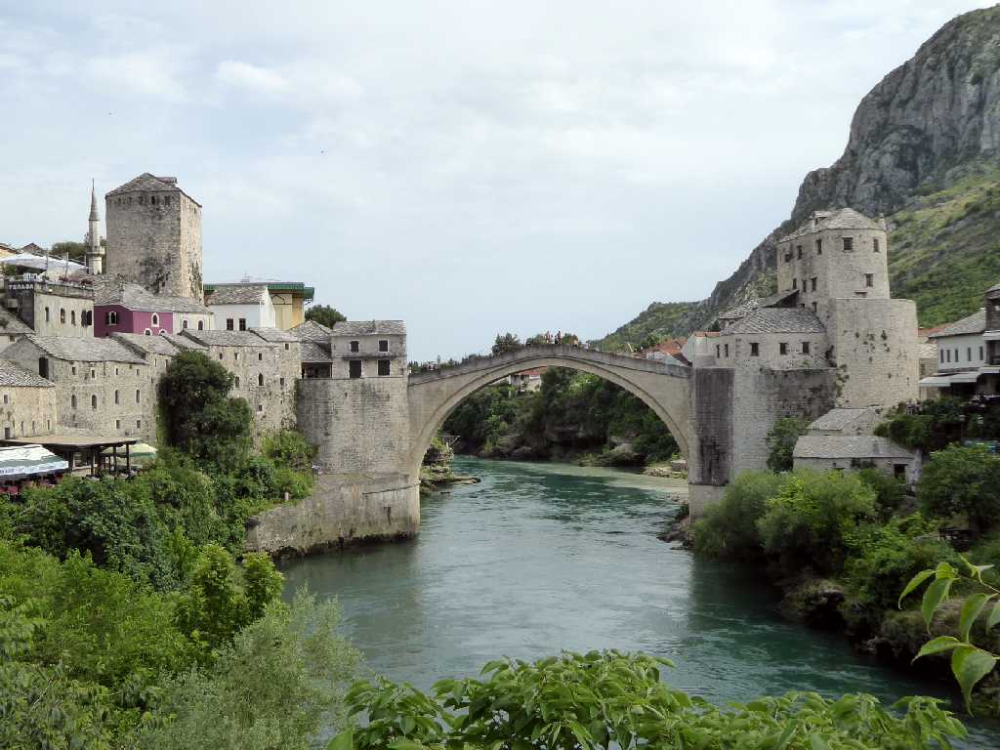
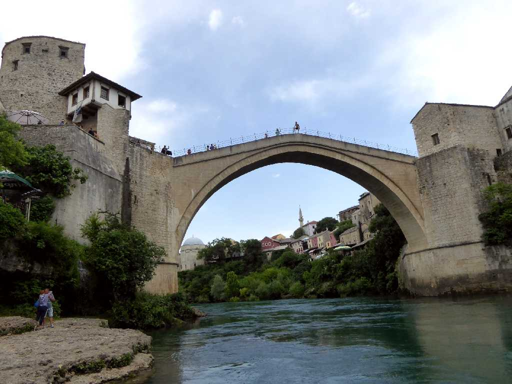
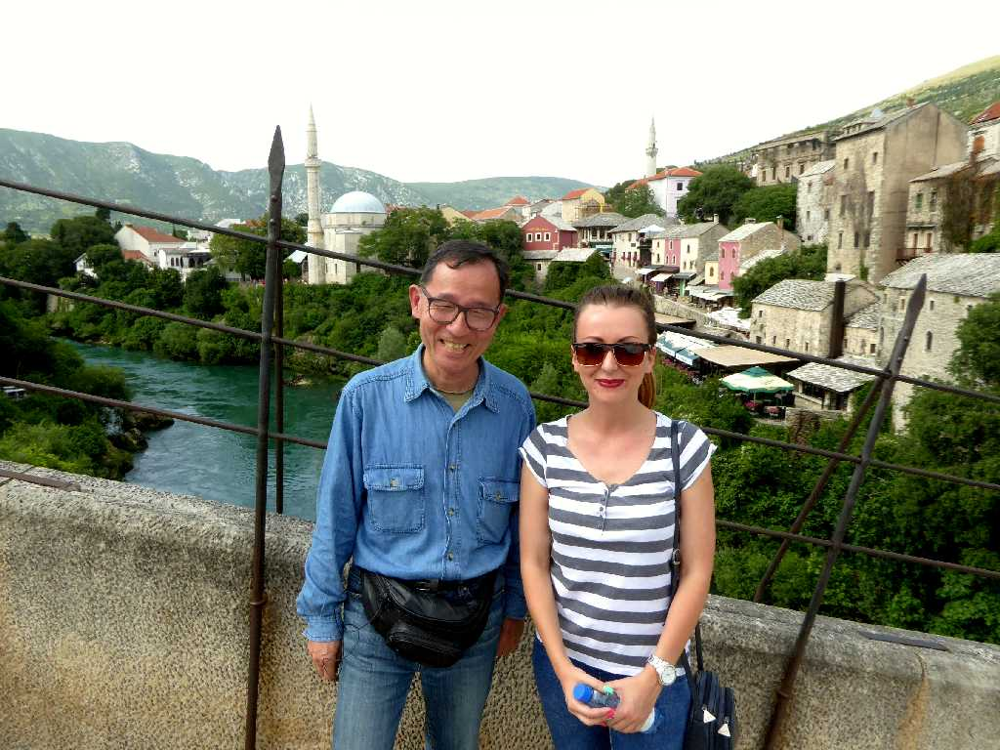
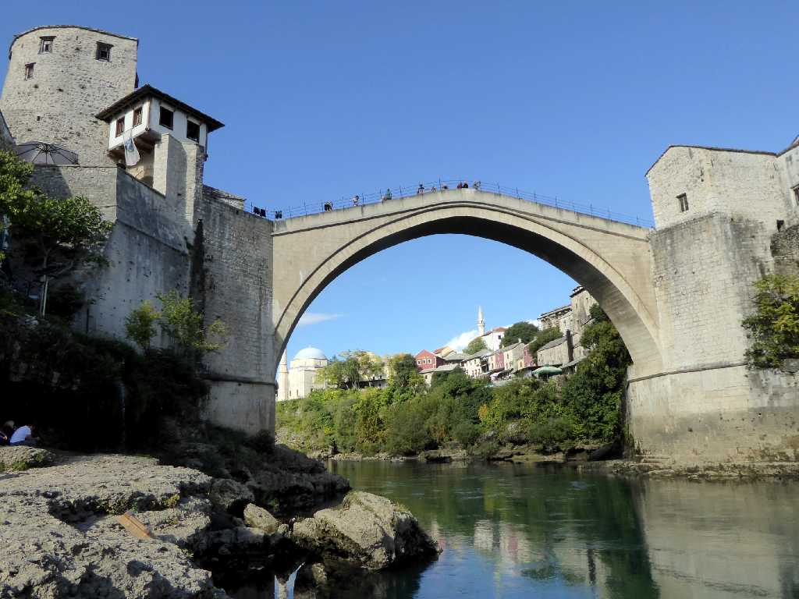
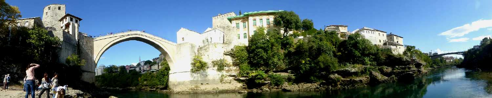
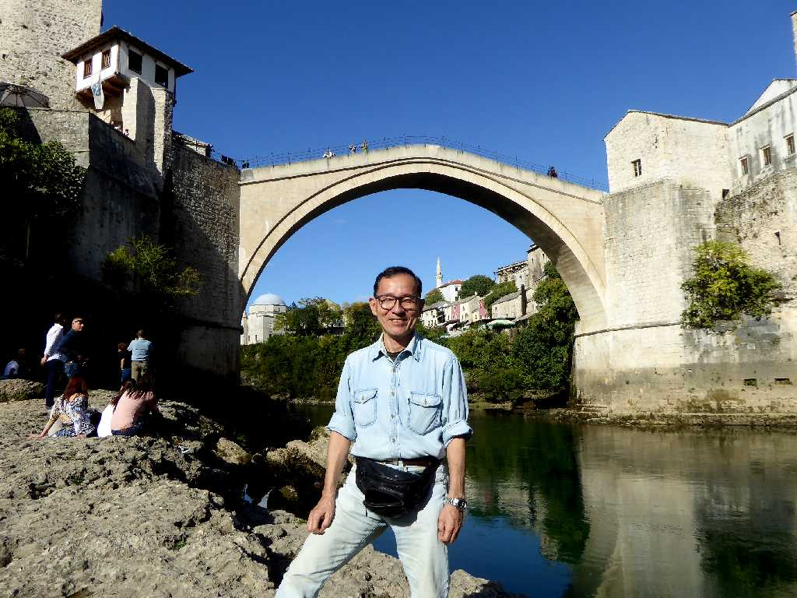

Stari Most Mostar Herzegovina
スタリモストとは古い橋を意味し１６世紀にネレトバ川に架られた石橋で全長３０ｍ水面高２４ｍ幅４ｍある

Stari Most Neretva River
橋中央で観光客よりダイビングの依頼を待っているようだ

June 16 2016 Stari Most

Stari Most Mostar Herzegovina
４ヶ月ぶりの再訪問で快晴の天気に恵まれた

Stari Most Neretva River

October 16 2016 Stari Most